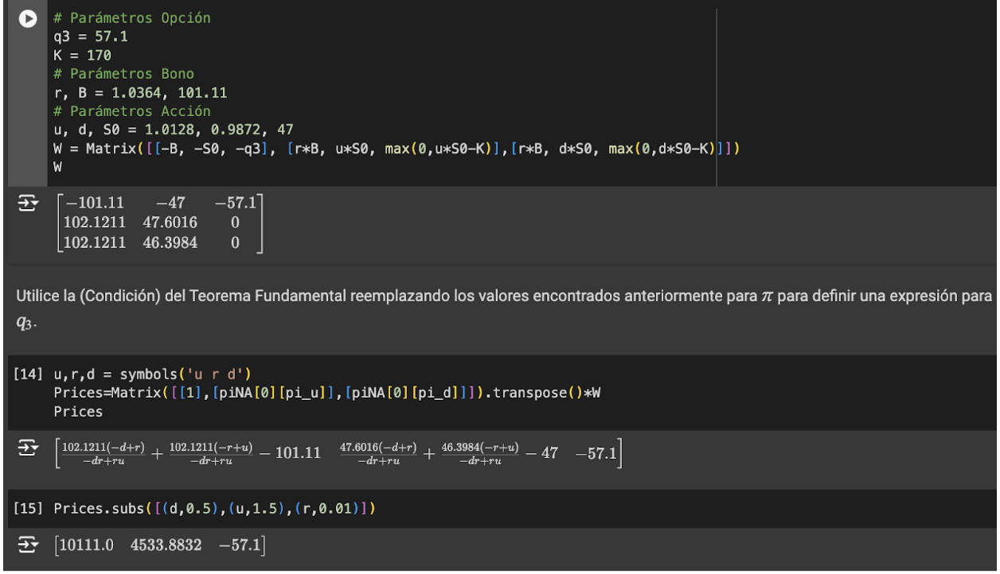
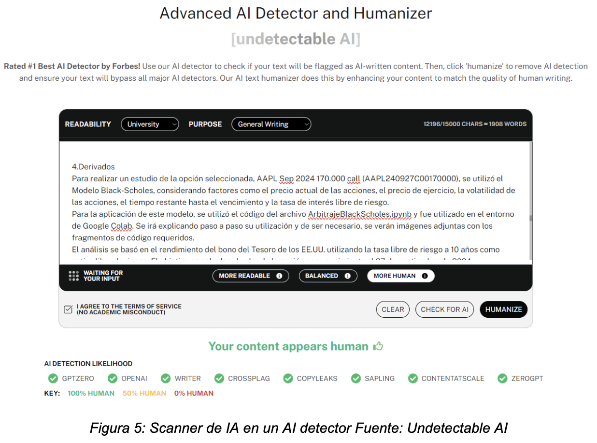

Proyecto Gestión Financiera
Hito 1:
Descripción Activo y Contexto
Fecha de entrega límite: Miércoles 25 de Septiembre 23:59.
Definición
El activo derivado AAPL Sep 2024 170.000 call (AAPL240927C00170000) pertenece al sector de la tecnología de la información y las telecomunicaciones, industria fundamental en la actualidad debido a la necesidad de la inmediatez de la información. Apple se centra en el diseño y producción de hardware tanto como el desarrollo de software y provisión de servicios digitales. El valor de las empresas en este sector, incluidas las opciones derivadas, es que son altamente dinámicas y competitivas. Mantienen una constante innovación, rápida introducción de nuevos productos y creación de ecosistemas integrados que combinan de manera eficaz hardware y software. La capacidad de innovar constantemente y desarrollar un ecosistema cerrado, donde los componentes de hardware, software y servicios están interrelacionados, han sido claves para el éxito de Apple en este campo (Miller et al., 2020). Además, se explora cómo este sector ha sido impactado por la combinación de nuevas tecnologías emergentes, como el 5G, la inteligencia artificial (IA) y el Internet de las Cosas (IoT) (Wang y Li, 2019). Estas tecnologías no solo están revolucionando la forma en que se desarrollan nuevos productos, sino que también determinan las áreas donde compañías como Apple dirigen sus inversiones en investigación y desarrollo para mantenerse a la vanguardia. La táctica de Apple de desarrollar un ecosistema que combina dispositivos y servicios digitales se ha convertido en un elemento central que la distingue dentro de un mercado extremadamente competitivo (Smith, 2021).
Motivación
La motivación para la selección de la opción AAPL Sep 2024 170.000 call se basa en la posibilidad de que el valor de las acciones de Apple Inc. (AAPL) aumente en un horizonte de inversión a mediano plazo, considerando la fuerte posición de la empresa en el sector tecnológico y su capacidad para generar valor mediante la innovación y la expansión de su ecosistema de productos y servicios.
Apple es una de las empresas líderes en el sector tecnológico, un área que, según estudios, sigue siendo de las más dinámicas y lucrativas debido a su constante innovación y la veloz adopción de nuevas tecnologías. Según Wang y Li (2019), este sector es un motor fundamental del crecimiento económico global, impulsado por la integración de tecnologías emergentes como la inteligencia artificial (IA) y el 5G. Estas innovaciones, combinadas con la creciente demanda de dispositivos inteligentes y servicios digitales, posicionan a Apple en un lugar favorable para aprovechar dichas oportunidades.
El estudio de Miller et al. (2020) destaca la ventaja competitiva de Apple por su capacidad para crear y sostener un ecosistema cerrado que integra hardware, software y servicios. Este enfoque le permite generar ingresos continuos y fomentar la lealtad de sus clientes. Esta fortaleza refuerza las expectativas de crecimiento sostenido a largo plazo de la empresa, lo que convierte a la opción call elegida en una estrategia atractiva para captar parte de ese crecimiento futuro.
El estudio de esta opción, con un precio de ejercicio de $57, muestra la proyección de que las acciones de Apple podrían superar dicho umbral antes de la fecha de vencimiento en septiembre de 2024, considerando tanto el crecimiento anticipado de la compañía como el comportamiento histórico de sus acciones. Este tipo de enfoque está en consonancia con investigaciones financieras que destacan el papel de las opciones como instrumentos clave para la gestión de riesgos y la optimización de beneficios potenciales (Smith, 2021).
Contexto
Para realizar un análisis de la opción AAPL Sep 2024 170.000 call, es crucial examinar tres variables fundamentales: precio del activo subyacente (AAPL), Volatilidad implícita y tasa libre de riesgo. Las variables anteriormente expuestas están correlacionadas y juegan un rol fundamental en la evaluación del valor y el comportamiento de la opción. A continuación se explicaran las variables y su relación con el sector elegido:
Precio de las Acciones de Apple (AAPL)
El precio actual de las acciones de Apple es un factor crucial en la valoración de esta opción. En este momento, las acciones de Apple se cotizan cerca de un nivel inferior al precio de ejercicio de $225.93 USD. Debido a la trayectoria de Apple, existe la posibilidad de que el valor de las acciones aumente considerablemente en los próximos meses, sobre todo debido a que recién empezó la venta de su nuevo producto estrella, el iPhone 16. Si el precio de las acciones supera el nivel de $225.93 USD antes de la fecha de vencimiento el 27 de septiembre de 2024, la opción se volverá rentable.

3.2 Volatilidad Implícita
La volatilidad implícita mide la expectativa del mercado sobre la fluctuación futura del precio de las acciones y es un componente crucial en la valoración de opciones. Una mayor volatilidad implícita generalmente incrementa el precio de las opciones, ya que sugiere una mayor probabilidad de que el precio de las acciones experimente grandes movimientos, lo que beneficia a los tenedores de opciones. Según Jones y Brown (2019), la volatilidad del sector tecnológico es alta debido a la naturaleza impredecible de los avances tecnológicos y las expectativas del mercado sobre la adopción de nuevas innovaciones. El estudio de Black y Scholes (1973) introduce el uso de la volatilidad implícita en la valoración de opciones, destacando que los sectores altamente innovadores, tienden a tener una mayor volatilidad debido a la incertidumbre asociada a los cambios rápidos en el mercado.
3.3. Tasa Libre de Riesgo
La tasa libre de riesgo tiene un impacto directo en el costo de oportunidad de mantener una opción. Estadísticamente, se analiza como una variable exógena con baja variabilidad, ya que su rendimiento está controlado por las políticas monetarias. En el modelo de Black-Scholes, la tasa libre de riesgo se utiliza para descontar el valor futuro de la opción a su valor presente. Una tasa libre de riesgo más baja puede aumentar el valor presente de las opciones. En la investigación de Wang y Li (2019), se discute cómo la tasa de interés impacta en la valoración de activos financieros, especialmente en mercados tecnológicos donde los inversores buscan retornos más altos debido a la incertidumbre asociada a la innovación. Según el estudio de Hull (2018), la tasa libre de riesgo es un componente esencial en la valoración de opciones y su impacto puede ser mayor en periodos de incertidumbre económica, como lo fue durante la pandemia, cuando se vieron afectadas tanto las tasas como los valores de las acciones de empresas tecnológicas.
Derivados
Para realizar un estudio de la opción seleccionada, AAPL Sep 2024 170.000 call (AAPL240927C00170000), se utilizó el Modelo Black-Scholes, considerando factores como el precio actual de las acciones, el precio de ejercicio, la volatilidad de las acciones, el tiempo restante hasta el vencimiento y la tasa de interés libre de riesgo. Para la aplicación de este modelo, se utilizó el código del archivo ArbitrajeBlackScholes.ipynb y fue utilizado en el entorno de Google Colab. Se irá explicando paso a paso su utilización y de ser necesario, se verán imágenes adjuntas con los fragmentos de código requeridos. El análisis se basó en el rendimiento del bono del Tesoro de los EE.UU. utilizando la tasa libre de riesgo a 10 años como activo libre de riesgo. El objetivo es calcular el valor de la opción con vencimiento el 27 de septiembre de 2024 y compararlo con el comportamiento esperado reflejando las condiciones de mercado a corto plazo y las expectativas de tasa de interés para inversiones seguras.
Parámetros utilizados para el análisis del modelo Black-Scholes
A continuación se expondrán los parámetros utilizados en el análisis del modelo respectivo:
Parámetros de acción
Precio Inicial del Activo Subyacente (S0): $47.00 Day’s Range: 0.6
Precio del Activo en Estado upper (St(wu)): u × $47.00 = $46.4.
Precio del Activo en Estado downer (St(wd)): d × $47.00 = $47.6
Factor de crecimiento(u): 1.0128 Factor de decrecimiento(d): 0.9872
Parámetros de la opción
Precio de la Opción (q3): $57.1 Precio de Ejercicio (K): $170.00
Parámetros del bono
Precio Actual del Bono US10Y (B): $101.11 (10 de septiembre)
Rendimiento al Vencimiento (r): 3.64% (10 de septiembre)


Con todo lo anterior, utilizando el código mencionado, se desarrolló el modelo de Black-Scholes utilizando los parámetros mencionados anteriormente y se obtuvo que el factor de cambio de aumento es 1.0128 y el factor de cambio de disminución es 0.9872 reflejando la sensibilidad de los precios del activo subyacente frente a los cambios en el mercado. Para esto, se utilizó el rendimiento del bono del Tesoro de EE.UU. a 10 años y el precio actual de este. El Teorema Fundamental de Valoración de Activos se aplicó para calcular las probabilidades ajustadas por riesgo y garantizar un mercado libre de arbitraje. Se resolvió un sistema de ecuaciones para determinar el valor justo de la opción al inicio del periodo, considerando las probabilidades y retornos de los activos involucrados. A continuación se muestra el fragmento del código utilizado y los respectivos resultados obtenidos:

En la figura 4, se puede observar los costos de la opción, los retornos del upper (positivos) y los retornos del downer. Con eso se puede concluir que el retorno en upper es muy alto con respecto al costo obtenido.
Bibliografía
Jones, P. & Brown, T., 2019. Competitive Strategies in the Global Sportswear Industry. Journal of Business Strategy, 34(3), pp. 45-58. Lee, H., 2021. Sustainability and Innovation in Sportswear: A Future Perspective. Journal of Environmental Management, 255, pp. 223-240. Miller, J., Smith, A. & Thompson, D., 2020. Innovation and Competitiveness in the Technology Industry: The Case of Apple. International Journal of Business Innovation, 14(2), pp. 99-115. Porter, M.E., 1985. Competitive Advantage: Creating and Sustaining Superior Performance. New York: Free Press. Smith, B., 2021. Consumer Loyalty in the Technology Industry: A Case Study on Apple’s Ecosystem. Journal of Consumer Research, 48(4), pp. 379-392. Smith, R., Li, Y. & Wang, Z., 2020. The Sportswear Market: Global Trends and Competitive Landscape. Global Journal of Business Research, 18(1), pp. 120-135. TradingView, 2024. TVC: US10Y - Rendimiento de los bonos del Tesoro a 10 años de EE.UU. [en línea] Disponible en: https://es.tradingview.com/symbols/TVC-US10Y/ [Accedido el 23 de septiembre de 2024]. Wang, Y. & Li, X., 2019. The Telecommunications and IT Sector: Global Trends and Disruptions. Journal of Technology and Society, 27(3), pp. 33-48. Yahoo Finance. (n.d.). Apple Inc. (AAPL) options. Retrieved September 22, 2024, from https://finance.yahoo.com/quote/AAPL/options/
Anexos

Figura 5: Scanner de IA en un AI detector Fuente: Undetectable AI
Hito 2 (en revisión):
Análisis de Largo Plazo
Caracterización deuda
Enel Chile mantiene deudas de prestamos bancarios por monedas y vencimiento, el que se detalla a continuación:

Del mismo estado financiero, se detallan los siguientes instrumentos financieros:
- Activos financieros no derivados: Costo amortizado, Activos financieros registrados a valor razonable con cambios en otros resultados integrales y Activos financieros registrados a valor razonable con cambios en resultados.
- Efectivo y equivalentes al efectivo
- Deterioro de valor de los activos financieros
- Pasivos financieros excepto derivados
- Derivados y operaciones de cobertura
- Baja de activos y pasivos financieros
- Compensación de activos y pasivos financieros
- Contratos de garantías financieras
La inversiones de al compañía son colocadas segun el siguiente criterio mencionado en su estado financiero:
“Las inversiones de excedentes de caja se efectúan en entidades financieras nacionales y extranjeras de primera línea con límites establecidos para cada entidad.
En la selección de bancos para inversiones se consideran aquellos que tengan calificación investment grade, considerando las tres principales agencias de rating internacional (Moody’s, S&P y Fitch).
Las colocaciones pueden ser respaldadas con bonos del tesoro de Chile y/o papeles emitidos por bancos de primera línea, privilegiando estos últimos por ofrecer mayores retornos (siempre enmarcado en las políticas de colocaciones vigentes).”
A continuación se presenta la clasificación de instrumentos financieros por naturaleza y categoria:

Caracterización de emisiones históricas (Aplicación cap. 20)
Segun el último estado financiero emitido por la empresa Enel Chile en junio 2023, la compañía tiene 69.166.557 miles de acciones ordinaria en circulación. En la base de la CMF no existen registros de emisiones de acciones, sin embargo si hay una inscropción en el registri de valores por una emisión de 10.000.000.000 acciones de pago ordinarias para así aumentar el capital de la empresa en $820.000.000.000, teniendo cada acción un precio de $82.
No existe registro del procedimiento utilizado para la emisión de estas acciones, solo se detalla que la junta extraordinaria de accionistas se llevó a cabo el 20 de diciembre de 2017 y que cuya acta se redujo a escritura publica el 28 de diciembre del mismo año.
Relación con activos derivados
Para protección de la empresa, esta busca cobertura frente a posibles riesgos que puedan alterar los objetivos de la compañía. Ellos mismos señalan “Los derivados mantenidos por el Grupo corresponden fundamentalmente a operaciones contratadas con el fin de cubrir el riesgo…”
Enel Chile toma en consideración y protección frente los siguientes riesgos:
- Riesgo de tasa de interés
- Riesgo de tipo de cambio
- Riesgo de commodities
- Riesgo de liquidez
- Riesgo de crédito
A continuación se desglozan los derivados de Enel Chile:

Los derivados se registran por su valor razonable en la fecha del estado de situación financiera. En el caso de los derivados financieros, si su valor es positivo, se registran en el rubro “Otros activos financieros”, y si es negativo, en el rubro “Otros pasivos financieros”. Si se trata de derivados sobre commodities, el valor positivo se registra en el rubro “Cuentas comerciales por cobrar y otras cuentas por cobrar” y si es negativo en el rubro “Cuentas comerciales y otras cuentas por pagar” (EEFF Enel Chile, Junio 2023).
Reporte grupal
Se decidieron los siguientes pesos del portafolio basándose en distintos factores, pero principalente la estimación de crecimiento a un año de cada uno de los activos proporcionada por Yahoo Finance. Los porcentajes del portafolio serán los siguientes:
Enel: 50%
Banco de Chile: 30%
Parque Arauco: 20%
En primer lugar, se determinó que Enel Chile tendra un 50% de peso en el portafolio debido al pronostico de crecimiento que tendrá en el proximo año (65.80%). Además en los ultimos 2 años ha obtenido un retorno promedio de 37.5%, mayor que los activos elegidos en las otras industrias. Otro aspecto que nos hizo elegir un peso mayor que las otras compañia es su compromiso con el medio ambiente, aspecto que cada vez es mas valordo. Por otro lado, la empresa ha invertido fuertemente en nuevos proyectos que probablemente demuestren mayores retornos en el futuro.
Por otro lado, al Banco de Chile se le asignó un 30% de peso en el portafolio debido a su liderzago en la industria bancaria en terminos de rentabilidad y ha jugado un papel sumamente importante a lo largo de los años en la industria financiera. Junto a esto, la proyección del banco en terminos de crecimiento para los proximos años, es positiva y cercana a un 11.8%.
Finalmente, a Parque Arauco se le otorgó un 20% del portafolio debido a la diversificación del modelo de negocios que han implementado en los últimos años. El ingreso al negocio de los edificios multifamily podría ser una razón de gran crecimiento para la empresa en el futuro, debido a que actualmente ya operan dos edificios en Santiago, tienen proyectos que estarán operando en el corto plazo en Perú y Colombia, y tienen planes de seguir ampliando esta cantidad. Considerando la gran demanda de arriendo que existe hoy en día, la empresa podría verse muy beneficiada con la implementación de este nuevo negocio.
Caso Grupal (No requerido para versión 2024)
Los datos se obtuvieron en su mayoría del Estado Financiero de la empresa Enel Chile a junio de 2023. Los datos que no pudieron ser encontrados se supusieron a partir de la misma información entregada en ese documento.
El caso escogido para replicar con nuestro activo fue el del capítulo 28 del libro guía del curso “Finanzas Corporativas” de Ross, en el cual se evalúan tres opciones. A continuación, se presentan los datos:


A partir de lo anterior, se puede determianar que el la opción 1 es la mejor debido a que obtiene el VPN mayor. Las opciones 2 y 3 dan un valor menor a la 1, lo que no se consideran optimas en este escenario.
Bibliografía
Ahmad Dar, A., Anuradha, N., 1 Department of Mathematics and Actuarial Science, B S Abdur Rahman Crescent University, IN, & 2 Department of Management Studies, B S Abdur Rahman Crescent University, IN. (2018). Comparison: Binomial model and Black Scholes model. Quantitative Finance and Economics, 2(1), 230–245. https://doi.org/10.3934/QFE.2018.1.230